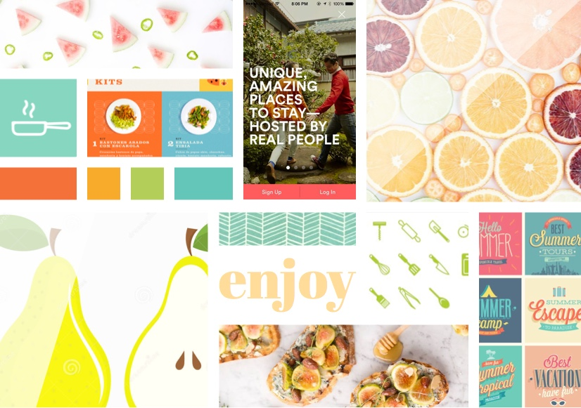
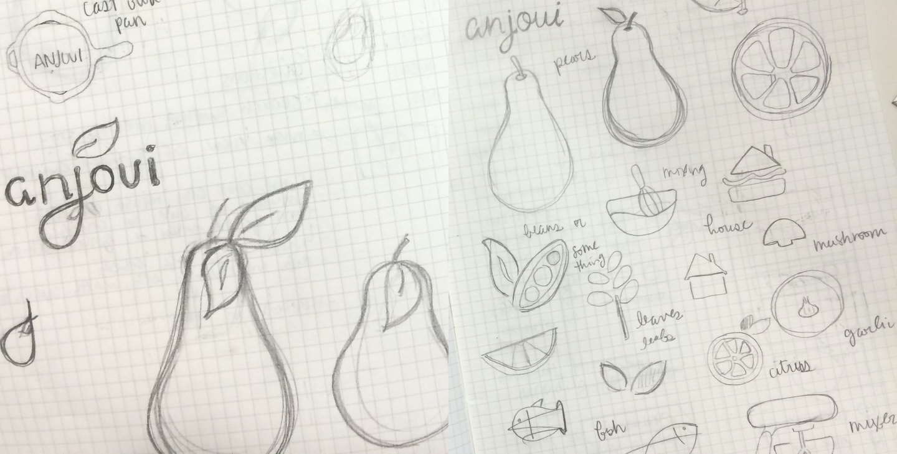
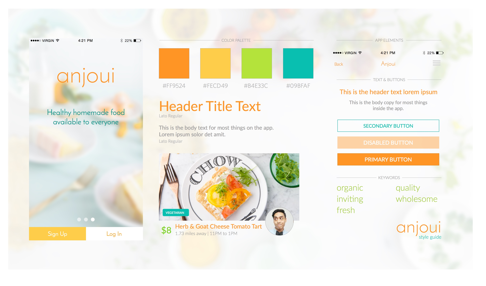
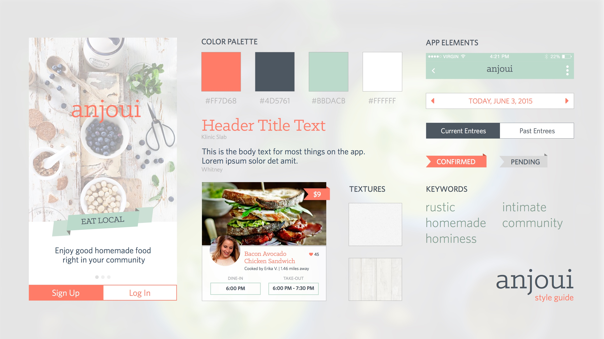
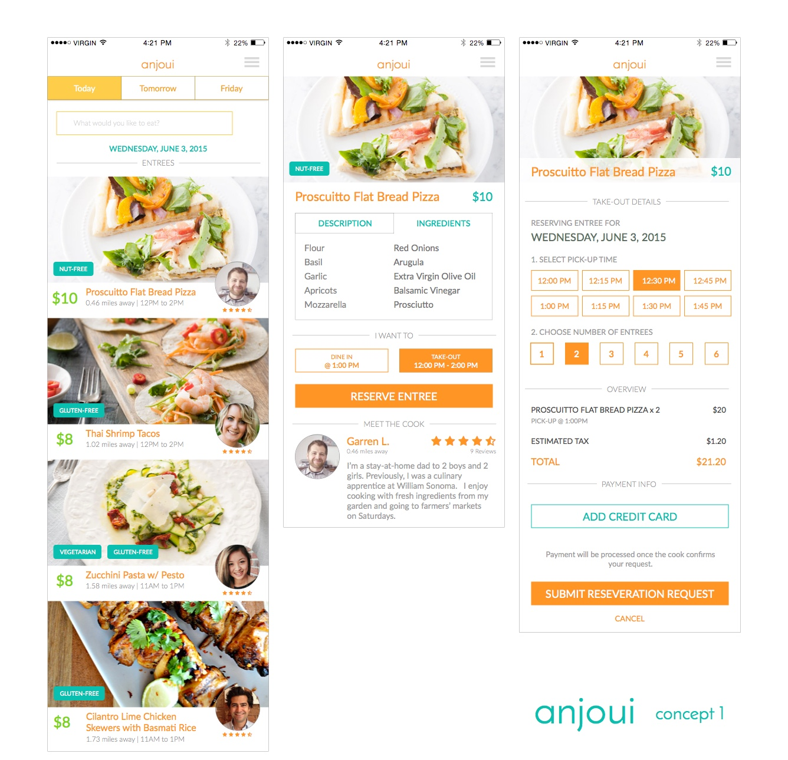
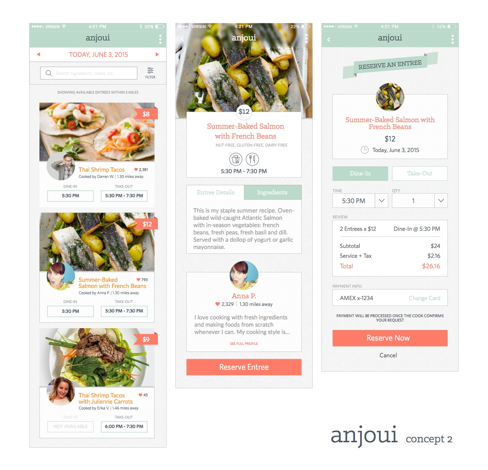

Project Overview
Anjoui is a peer-to-peer meal service application that allows passionate home cooks to connect with local diners seeking fresh and affordable meals. As a completely new startup, the client approached us to establish their branding and idenity.
My Role
As the UI and visual designer, I was tasked to create two unique branding concepts that would best convey the Anjoui brand based on UX and ethnographic research. I worked on a team of three to collaborate on brainstorming exercises and word mapping, but we were all responsible for our own designs.
Research, research, research!
I started my design process with a brand audit to familiarize myself with the market and figure out where Anjoui stands in its field. I downloaded roughly 20 iOS food apps and took note of the competitors’ brand image and voice, demographics, social presence, and user experience.
From the insight that I gathered, I put together a mood board of my vision for the Anjoui’s brand identity.
Logo Exploration
I collaborated with two of my peers and we created a word map that eventually lead us to some potential concepts. There were several repeating patterns that suggested where to take the brand. From there, I like going to sites like iconfinder.com or thenounproject.com to see what kinds of visuals I could get from our word map. This was extremely helpful for drawing inspiration for the logo, but it was never presented to the client.
Working on the Identity
The fun part begins. I’m talking color palettes, typography, iconography, photography—oh my!
I presented my two concepts in the form of a style guide to the client to help them visualize what Anjoui could look like as a whole. I believe it’s important to show all of these elements together because it’s more than just looking at colors and fonts—it can trigger emotions. It can even tell a story. It’s a preview of the app experience.
Concept 1: Bright, Modern, Organic.
My first concept conveyed a fresh and fun feel and kept the original word mark that the client created. Most food apps took advantage of red and orange palettes to evoke hunger, but we don’t just want our users to just eat anything, we want them to eat healthy and local.
Concept 2: Rustic, Homemade, Natural.
My inspiration for this came when I explored food magazines and food blogs and saw that people often associate homemade to that rustic and homey feel. Doesn’t it also feel Matha Stewart-y, too? You see where I’m going with this? To tie it all together, I included textures like burlap and chose a slab serif typeface.
The Unveiling!
 I took the wireframes from the UX team and flushed them into high-fidelity comps using Sketch 3, however, the iconography was still created in Illustrator. Side note: It was my first time using this Sketch and I think I’ve converted from Illustrator and Photoshop for good. It was such a surprise that everything was so intuitive and felt like a native Mac app. It was fast, reliable (minus a few crashes, but luckily it was all recovered), and the plug-ins were just the cherry on top!
Result
The client loved both designs and were thrilled to have us design the Anjoui app. Which one do you think they chose?
Anjoui is currently in development and will be available for iOS in late 2015.